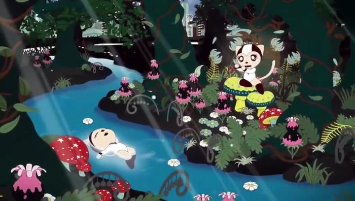

I had just finished watching and writing a review of the indie film "Tamala 2010 - A Punk Cat in Space," released on Bluray by Deaf Crocodile. This was in preparation for a world premiere of the sequel, "Tamala 2030," released more than 20 years later, at Montreal's Fantasia Film Festival. And my conclusion was that I didn't care to see the sequel any longer. But because it was a world premiere, and because this was so long awaited... curiousity got the better of me, and I went to see it. To sweeten the deal, I saw on the same day the Mexican stop-motion feature "I am Frankelda," with a nearly sold-out audience that gave a roaring standing ovation unlike any I had seen at the festival before or since. By comparison, "Tamala 2030 - A Punk Cat in Dark," got a polite but more muted reception.I will say the sequel does improve in a couple ways. First, computer productions have improved significantly, and the new movie is now HD, with more dynamic camera motion, and more ambitious compositing. The "Hello-Kitty"-style simplicity of the character designs and animations never looked better. There's even a few shots of the cute Tamala, just hanging out in a forest or on a couch, that would make for great animated screensavers. Second, the plot frames itself with a mystery: assistant Tamala and down-on-his-luck detective Michelangelo investigate the disappearance of seven seemingly unrealted cats in their country resembling the geography of Japan. The movie goes to some weird, abstract places from there, but this foundational plotline gives at least the semblance of structure, whereas "Tamala 2010" felt aimless. Despite those improvements, I was surprised at how LITTLE has changed between "Tamala 2010" and "Tamala 2030." Many of the same story beats repeat, just in slightly different ways. Many of the long expositions describing the twists in "2010" are repeated almost verbatim in "2030." It's as if the director was concerned, perhaps rightfully so, that some viewers had not seen the original, and that "2030" would be their first entry. Even the detailed 3D models of cityscapes and giant robots from the first movie, which hold up surprisingly well, are carried over with little to no change. An odd sense of deja-vu lay like a fog during my viewing. It doesn't help that "2030" is over two hours long, more than double what it really needed to be, even if "2010" hadn't come first. If you are already into the Tamala rabbit hole (and I don't recommend watching "2030" if you've never seen "2010" or at least the short films that followed), how does this hold up as a sequel? And does it set up the originally promised third film? There doesn't appear to be any remaining plot threads, unlike "2010"'s cliffhanger, so I don't think a third film is coming, and "2030" can be safely treated as the franchise's conclusion. There are certainly discontinuities regarding characters, time and place, but even with the short films, that was never consistent. I assumed the major questions from the first film, such as those regarding the "Catty and Co." company and Tamala's mother, were forgotten and thrown away, but "2030" does indeed address these, however brief and unsatisfying the conclusions may be. But "2030" brings more questions than it answers. Or rather, I think it answers them, but the plot becomes so abstract that I can't really tell anymore. It's a shame, because some of the new "lore" does appear promising, but it feels like a puzzle without an answer.  Some earlier interviews revealed the director wanted to include aspects to how the world changed into "2030," including the recent pandemic, and multiple world-wars-we're-not-calling-world-wars. These are in fact mentioned in background news feeds during the movie, simply to convey the general sense of dread and anxiety, and the helplessness of standing in front of the end of the world. It sounds good on paper, but feels shoehorned at the last minute in practice. The movie's end at least is uplifting, although I couldn't explain how things were resolved, other than saying "it's because of Tamala." And yes, Tamala is still as crude as ever, cutely swearing threats at passersby.So... yeah, "Tamala 2030 - A Punk Cat in Dark" doesn't change my opinion much on the franchise. It's ambitious for a solo-creator-driven production, and I still can imagine Tamala being a popular character tattoo for anti-establishment folks. But it's as vague and thick as pea soup. Even if underground indie movies are your jam, I would struggle to recommend this.
- "Ani" More reviews can be found at : https://2danicritic.github.io/ Previous review: review_Tamala_2010_-_A_Punk_Cat_in_Space Next review: review_Tarzan